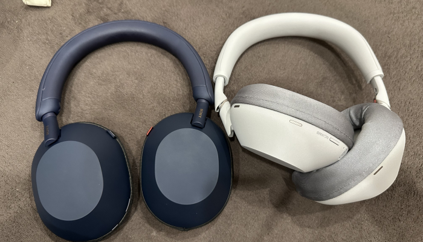
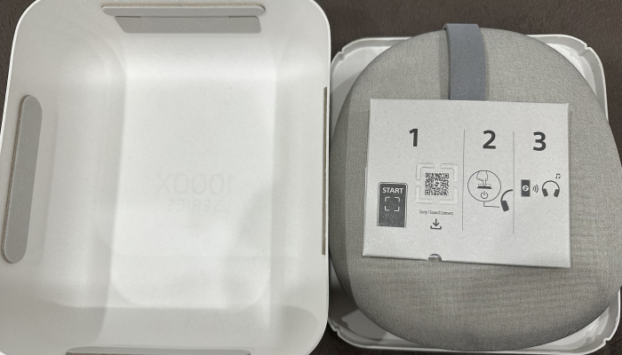
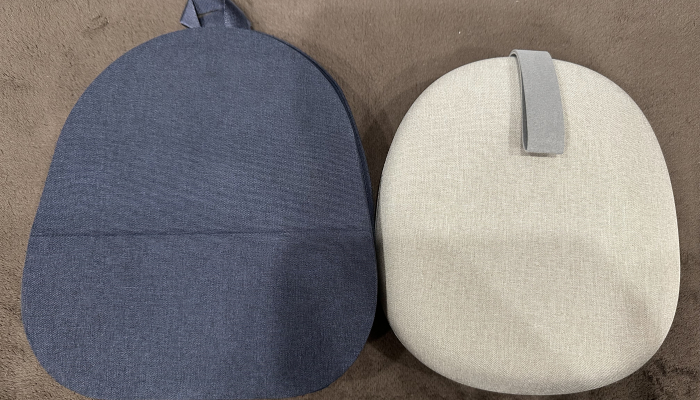

금새 3달이 지나있네.. 최근에 안쓰는 헤드폰들을 좀 정리했는데, 샀다 팔았다를 반복했던 xm5에 나름만족하고있었음에도 아무래도 xm6가 써보고싶었던거다. 내가 젠하 모멘텀4등도 다팔고 결국소니해드폰만 남긴것에대해 지피티란테 물어보니, 나는 음이 선명한걸 좋아하면서도 따뜻한 음색을 좋아하는 취향이라 그렇다한다. xm4, 5, 6를 다 써본입장에서 4는 정말 아무생각과 불만없이 썼엇고, 5는 마음에 안드는듯했는데 3번이나 산걸보면 맘에드는거같고, 6은 영화 음향이라거나 까페음향이라거나 하는 기능이 생각보다 좋은듯? 에어팟에서 쓰던 그기능이랑 비숫해서 그런갑다   